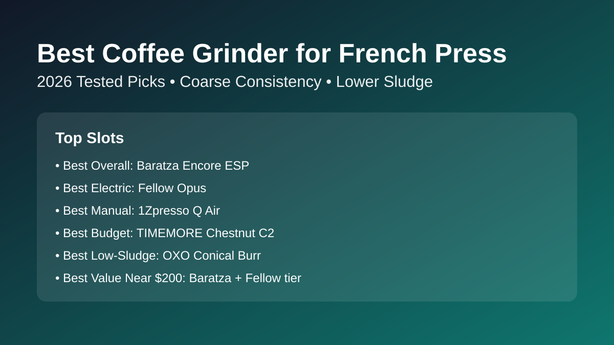

Best Coffee Grinder for French Press (2026): 7 Picks Tested
French press can taste rich and sweet, or muddy and bitter. The difference is usually grinder quality. We shortlisted seven grinders that produce repeatable coarse particles with less sludge, then mapped each pick to real routines: batch brewing, travel, low-budget upgrades, and low-mess daily use. If you are still choosing brewer style first, see our AeroPress vs French Press comparison before buying gear.

Quick answer: The best coffee grinder for French press for most buyers is Baratza Encore ESP because it hits a stable coarse range with lower sludge than cheap entry grinders. If you want travel-friendly manual value, choose 1Zpresso Q Air. If budget is strict, TIMEMORE C2 is the safest low-cost upgrade.
TL;DR winner box
Best overall: Baratza Encore ESP
Best electric for batch brewers: Fellow Opus
Best manual for travel/small kitchens: 1Zpresso Q Air
Best budget pick under $100: TIMEMORE Chestnut C2
Comparison table
Prices checked: March 2026
| Product | Best for | Grinder type | Burr type | Coarse grind range | Coarse consistency score (1-5) | Fines/sludge risk | Static/retention note | Cleanup effort | Price band | Check price |
|---|---|---|---|---|---|---|---|---|---|---|
| Baratza Encore ESP | Best overall | Electric | Conical steel burr | Wide, repeatable coarse steps | 4.5 | Low | Moderate static in dry air; easy chute brushing | Low | $$ | Check price |
| Fellow Opus | Best electric for batch brewers | Electric | Conical steel burr | Broad filter range with fine adjustment ring | 4.4 | Low-Medium | Low retention; occasional fines cling near exit | Medium | $$ | Check price |
| 1Zpresso Q Air | Best manual travel pick | Manual | Conical steel burr | Precise click range for medium-coarse brews | 4.3 | Low | Very low retention; static rarely a problem | Low | $ | Check price |
| TIMEMORE Chestnut C2 | Best budget under $100 | Manual | Conical steel burr | Good coarse range for French press | 4.1 | Medium | Low retention; occasional fines buildup after oily beans | Low | $ | Check price |
| OXO Brew Conical Burr | Best low-sediment electric value | Electric | Conical steel burr | Clear coarse settings for immersion brews | 4.2 | Low-Medium | Static can spike on dry days; retention stays manageable | Low | $ | Check price |
| KINGrinder K6 | Best low-sludge manual upgrade | Manual | Conical steel burr | Very broad range with tight click control | 4.6 | Low | Near-zero retention; minimal static due to manual chute path | Low | $$ | Check price |
| Bodum Bistro Burr | Best compact countertop pick | Electric | Conical steel burr | Usable coarse range, fewer top-end options | 3.8 | Medium-High | Higher static in grounds bin; needs frequent wipe-down | Medium | $ | Check price |
How we evaluate
Our shortlist weights five factors: brew quality, grinder consistency, usability, cleaning burden, and value for money. For French press pages, we add extra weight to fines control, because too many tiny particles create sludge and muddy texture even with a good brew ratio.
Product reviews by use-case
1) Baratza Encore ESP — Best Overall Coffee Grinder for French Press
Verdict: Best for most home brewers who want one dependable grinder for French press now and espresso later.
Buy this if... you want cleaner French press cups without upgrading again next year.
Skip this if... your budget is hard-capped below $100.
Pros
- Very stable coarse particles for immersion brews.
- Easy step repeatability for day-to-day recipes.
- Serviceable platform with strong long-term reliability.
Cons
- Louder than some compact competitors.
- Hopper workflow is less tidy than single-dose grinders.
Key specs: Electric conical burr · 40 grind settings · 300 g (10.6 oz) hopper · model ZCG495-120V.
Check Baratza Encore ESP price on Amazon
Why it wins this slot: It gives the safest balance of cup clarity, repeatability, and long-term value under $200.
Retention/static behavior: Static is moderate in dry weather; one light RDT mist keeps retention predictable.
Cup profile for French press: Full body with better clarity than budget grinders and low visible sediment when dialed coarse.
2) Fellow Opus — Best Electric Pick for Batch Brewing
Verdict: Best for households brewing 2-4 cups at a time who want quick workflow and low-mess grounds handling.
Buy this if... you need electric convenience with better fines control than basic entry grinders.
Skip this if... you dislike dual adjustment systems.
Pros
- Consistent coarse grind output for French press batches.
- Compact footprint with modern anti-static engineering.
- Strong range if you also brew pour over.
Cons
- Inner ring adjustment takes a week to learn.
- Cleanup is moderate around chute edges.
Key specs: Electric conical burr · 41 adjustable settings · 40 mm stainless steel burrs · model 840228804147.
Check Fellow Opus price on Amazon
Why it wins this slot: It combines French-press consistency with daily batch convenience in a small kitchen footprint.
Retention/static behavior: Low retention overall, with minor fines cling after very light roasts.
Cup profile for French press: Rich body, moderate texture, and generally clean finish with restrained sludge.
3) 1Zpresso Q Air — Best Manual Grinder for French Press
Verdict: Best for small kitchens, office setups, and travel brewers who still want low-sediment cups.
Buy this if... you value portability and quiet operation over push-button convenience.
Skip this if... you regularly brew large multi-cup batches before work.
Pros
- Excellent grind control for a compact manual grinder.
- Quiet, cable-free workflow.
- Fast enough for one to two cups without fatigue.
Cons
- Manual effort rises with larger doses.
- Less ideal for big family brewing routines.
Key specs: Manual conical stainless burr · numerical stepped adjustment · mini travel-size body · model Q Air Black.
Check 1Zpresso Q Air price on Amazon
Why it wins this slot: It delivers cleaner French press cups than many budget electric grinders while staying ultra-portable.
Retention/static behavior: Grounds drop cleanly with very low retention and almost no static mess.
Cup profile for French press: Balanced body, good clarity, and low sediment even with darker roasts.
4) TIMEMORE Chestnut C2 — Best Budget Pick Under $100
Verdict: Best first burr-grinder upgrade for buyers moving up from blade grinders on a strict budget.
Buy this if... you need better cup consistency now without crossing $100.
Skip this if... you need electric speed for large daily batches.
Pros
- Reliable coarse output for the price tier.
- Simple adjustment system for beginners.
- Durable body with low maintenance needs.
Cons
- Slightly slower grinding than premium hand grinders.
- More fines than top-tier options.
Key specs: Manual grinder · CNC stainless steel tapered burr · internal adjustable setting · 25 g stated capacity.
Check TIMEMORE Chestnut C2 price on Amazon
Why it wins this slot: It is the highest-confidence low-cost path to cleaner French press cups.
Retention/static behavior: Low retention; fines can build up after oily beans if not brushed weekly.
Cup profile for French press: Full and pleasant body with moderate sediment that stays manageable when dialed coarse.
5) OXO Brew Conical Burr — Best Low-Sediment Pick (Electric Value)
Verdict: Best for buyers who want affordable electric convenience with better-than-average sludge control.
Buy this if... you prioritize easy workflow and cleaner French press output under $100-$120.
Skip this if... you plan to chase precise espresso shots soon.
Pros
- Good coarse consistency for immersion brewing.
- Simple timer workflow for repeatable doses.
- Low everyday cleaning burden.
Cons
- Fines control trails top mid-tier grinders.
- Static can increase in dry climates.
Key specs: Electric conical stainless burrs · one-touch automatic smart grind · 12 oz (340 g) hopper · model 8717000.
Check OXO Brew Conical Burr price on Amazon
Why it wins this slot: It offers one of the best electric value ratios for French press-focused buyers.
Retention/static behavior: Retention is moderate-low, but static cling around the bin needs occasional wipe-down.
Cup profile for French press: Dense body with acceptable clarity and low-to-medium sludge when coarse settings are used.
6) Bodum Bistro Burr — Best Compact Countertop Pick
Verdict: Best for compact kitchens where footprint matters more than absolute grind precision.
Buy this if... you need an affordable grinder that fits limited counter space.
Skip this if... sediment control is your top priority.
Pros
- Small footprint and easy one-knob operation.
- Works well enough for casual French press use.
- Wide retail availability and straightforward setup.
Cons
- More fines than premium electric picks.
- Static in the grounds bin can get messy.
Key specs: Electric conical burr · 12 grind settings · preset timer · model 10903-01US-3.
Check Bodum Bistro Burr price on Amazon
Why it wins this slot: It is a practical space-saving choice when you want electric grinding in tiny kitchens.
Retention/static behavior: Static and bin retention are noticeable; cleaning every few brews is mandatory.
Cup profile for French press: Heavy body with moderate clarity and medium sediment, especially at finer coarse settings.
7) KINGrinder K6 — Best Value Upgrade Near $200
Verdict: Best for enthusiasts chasing low sludge and high particle uniformity without paying premium electric prices.
Buy this if... cup quality matters more than push-button speed.
Skip this if... hand grinding feels like friction in your morning routine.
Pros
- Outstanding coarse uniformity and low fines output.
- Strong build quality with precision click control.
- Near-zero retention and very tidy workflow.
Cons
- Manual effort is real for larger doses.
- Higher up-front cost than entry hand grinders.
Key specs: Manual conical burr grinder · aluminum + stainless steel body · K6-Bent Handle listing · model 2AK6001 IR.
Check KINGrinder K6 price on Amazon
Why it wins this slot: It gives near-premium grind quality and excellent sediment control while staying well below high-end grinder pricing.
Retention/static behavior: Extremely low retention and very little static due to direct grounds path.
Cup profile for French press: Full, sweet body with high clarity and very low sludge for this price band.
Buying guide
What grind size is right for French press?
Start at medium-coarse, like rough sea salt. Too fine creates sludge and over-extraction; too coarse turns cups thin. Once your grinder is set, use this coffee brewing ratio guide to keep dose and brew strength consistent.
Why burr design changes sediment in the cup
Better burr geometry makes particle sizes more uniform, so fewer tiny fines pass through the metal filter. That means less muddy texture and cleaner flavor separation. This is why a quality burr grinder beats blade chopping for French press.
Manual vs electric: which fits your daily routine?
Choose manual if you brew one or two cups, travel often, or want max grind quality per dollar. Choose electric if you batch brew most mornings. If your budget is tight, compare this page against our best manual coffee grinder under $100 guide.
How to reduce fines, static, and retention
Use a coarse setting, avoid stale oily beans, and lightly mist beans (RDT) before electric grinding in dry climates. Clean the chute and grounds bin often. For broad sub-$200 options beyond French press, see our best burr coffee grinder under $200 roundup.
Cleaning cadence that keeps flavor consistent
Brush out loose grounds every 2-3 brews and deep-clean burrs every 4-6 weeks. This keeps old oils from muting flavor and prevents accumulation that increases fines contamination in your cup. For a simple daily/weekly schedule, follow our burr grinder cleaning guide.
FAQ
What grind size is best for French press coffee?
Medium-coarse is the sweet spot for most French press brewers. It balances extraction and body while reducing silt that makes cups muddy.
Is a manual or electric grinder better for French press?
Neither is universally better. Manual usually wins on grind quality-per-dollar and portability; electric wins on speed and convenience for batch brewing.
Can I use a blade grinder for French press?
You can, but cup quality is usually inconsistent because blade grinders create too many fines and boulders. A burr grinder is the better long-term fix.
How do I reduce sludge/fines in my French press cup?
Use a burr grinder at medium-coarse settings, avoid aggressive plunging, and let the brew settle for 60 seconds before pouring. Fewer fines in the grind is the biggest lever.
How often should I clean my grinder for consistent taste?
Do a quick brush clean every few brews and deep-clean monthly. Consistent cleaning reduces stale residue and keeps particle output stable over time.
Related guides
- AeroPress vs French Press
- Coffee Brewing Ratio Guide
- Best Manual Coffee Grinder Under $100
- Best Burr Coffee Grinder Under $200
- Best Coffee Grinder for Pour Over
- How to Clean a Burr Coffee Grinder